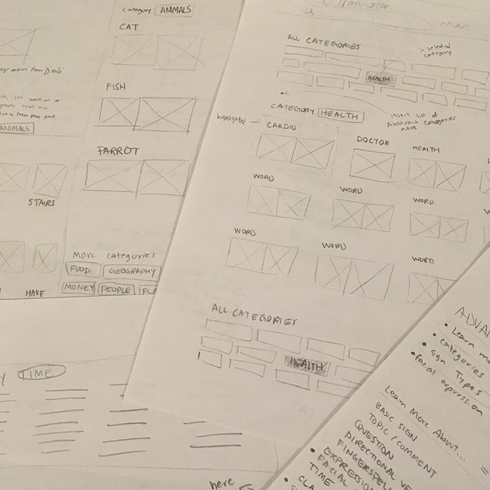
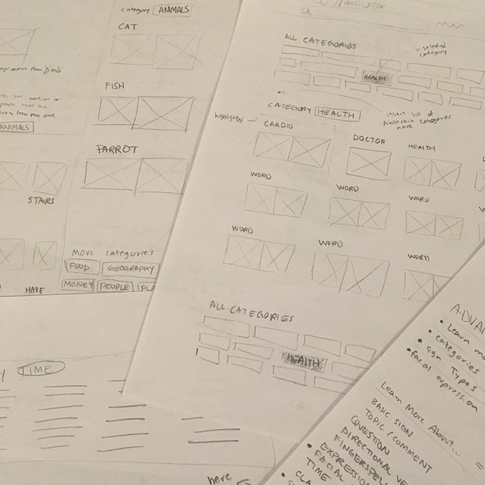

The American Sign Language Guide
A personal project by Brandon Falcone


Table of Contents
Contextual Inquiry
User Models
Design
Information Architecture
Prototype
UX Evaluation
A personal project by Brandon Falcone
Contextual Inquiry
User Models
Design
Information Architecture
Prototype
UX Evaluation
I became interested in ASL (American Sign Language) after meeting a few people in the Deaf community. I decided to learn ASL because it bothered me that I was unable communicate with the Deaf. To my surprise, there was not a single user friendly website that could teach the language. After spending 1 year learning from books at my local library and occasional practice with a signing friend, I came up with an idea for a much needed online resource for teaching the language.
I analyzed a variety of digital and physical resources on the web and at my local library. It was difficult finding a single website that taught ASL vocabulary, grammar, and sentence structure. Existing websites that attempted to teach all of these subject were plagued with design issues making them unpleasant and difficult to learn. The websites I discovered from Google’s top search results contained the following issues:
I needed to learn more about the people who learn ASL and how they learn in order to really understand my target audience. By being conveniently located near Gallaudet University, a federally chartered university for the education of the Deaf, I had more access to ASL signers than anywhere in the country. I prepared some research questions, journeyed to a familiar campus setting, and interviewed students. I sought out how users learned the language, what difficulties they faced, and tips for others wanting to learn the language.

My goal was to provide people with a complete guide to the language targeted at the beginner learner while addressing the issues found in existing websites. My solution to these issues would be to have better navigation, more exploration, and faster learning capabilities. To design for my target audience, I analyzed my collected data and extracted requirements from a WAAD.
Constructing a WAAD (Work Activity Affinity Diagram) is one of my favorite exercises in a UX lifecycle process. I converted the contextual data I gathered from my research into work activity notes. I grouped these notes into related issues and themes and attached labels to each group. With the completed WAAD, I formed requirement statements, each one focusing on a particular user need or system function. Here is a sample requirement statement that I created:
The primary work role of the website is the Beginner ASL Learner. The two major user tasks of this work role are (1) to learn signs and (2) to learn the syntax of the language in order to string signs together and form sentences. Because this work role has such a broad user population, it requires multiple user class definitions to describe all the different kinds of people that can assume this role. The most popular user classes in this work role include:
I considered what the design might look like for each of my user classes in order to identify a primary persona. Designing a website with font size large enough for the Elderly to read was an important design consideration that would not negatively impact the other personas. And since all of the user classes have such similar goals, I selected Late Deafened Adult as my primary persona.
 

Signs and Syntax are the 2 main components of ASL. I wanted to keep these two separate in order to accommodate the two major user tasks. I designed a system that would allow users to freely switch between these tasks. Each Sign Page includes example ASL phrases pertaining to a few syntax lessons. Clicking on the lesson will take you to the Syntax Lesson Page where you can learn all about syntax. When clicking on an ASL vocabulary word from the Syntax Lesson Page, you will be routed to the word's associated Sign Page.
Attractive products that make users happy can improve their ability to use the product. I chose an aesthetically pleasing layout and color scheme that's easy on the eyes and elicits a calming effect in the user. The use of green throughout the website also denotes a novice level of experience in terms of ASL knowledge, a minor design consideration for the target audience group, Beginner ASL Learner. I also included a message display area that compliments the user while learning, further adding to a positive user experience.

I looked for the best design that would meet the users' needs and the primary goals of the system. My first few designs were not the best in meeting these goals. Only after iterative cycles of UX evaluation and design refinement was I confident that I was on the right track to creating the right design.
The website's design allows users to quickly learn signs that strongly relate to each other. For example, the signs for TODAY and YESTERDAY are contained on the same page since they both belong to the TIME category. Designing webpages around categories of signs gives structure to the website and provides easy learning and fast findability.
The information architecture of the website allows content to be both findable and searchable.
To have good findability, global navigation contains a search bar where users can search for any ASL sign.
A webpage exists for each category of signs and contextual navigation provides a list of these categories at all times.
To have good searchability, users need to be able to easily find the website from an unknown location, such as Google.
Since webpages exist for each category of signs and not to any individual sign, I anticipated this would create poor searchability in the Google search results.
URLs such as theASLguide.com/category/time might look irrelevant in the search results to someone searching for “today ASL sign”.
My solution was to attach a list of all ASL words that fall into a certain category to the description attribute within the meta tag for each category page.
This allows for the sign being searched to appear in the Google search result.

The grouping of signs into categories is a major part of the website's organization. Using the Codenames board game, I was able to quickly conduct an Open Card Sort using 200+ words, each representing an ASL vocabulary word. I was able to validate some existing categories and identify new ones. Additional Closed Card Sorting sessions focused on specially chosen words would be beneficial for validating the signs of a few categories.


I used Marvel to create a high-fidelity interactive prototype to be used in the UX Evaluation phase.
Throughout the design phase I conducted iterative cycles of evaluation and refinement by performing a Design Walkthrough from the perspective of the user. I used my phone to record notes I made orally to anticipate and identify issues in the interaction design. Improvements were made to navigation, labels, and layout until I was confident it was time to put the design into the users' hands.
In my field-based testing, participants were asked to complete a series of tasks while using a high-fidelity prototype. Much of my time in these sessions was spent taking note of critical incidents to identify specific UX problems. In my notes, I recorded the critical incidents, think-aloud data, and the user’s emotional response involved in each task. A questionnaire and survey was supplied at the end of the session.
Users' physical cues like leaning into the screen and squinting indicated that font-size would need to be increased- an important design consideration for our primary persona. Users spent far too much time thinking about what was being displayed in the "Phrases & Advanced Lessons" section; better labels and additional labels indicating the translation of phrases from English to ASL might help with understanding. The post-session survey and questionnaire revealed that they were pleased with their overall experience using the prototype. Users' feedback include:
Current state of the system is easily understood by the user. I identified an issue with this heuristic. Users may not easily understand what webpage they are looking at. The method for indicating what category of signs is being displayed can become out of view due to “The Fold”. My solution was to have the category written out and displayed at the top of the webpage. Here is a before and after picture: